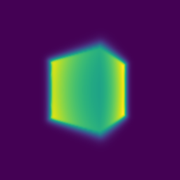
Volume Rendering, NeRF, and 3D Gaussian Splatting · Andrew ID: farnazaa
Pixel coordinates are generated on a W×H grid and mapped to NDC in [-1, 1]. Each pixel is lifted to the plane
z = 1 in NDC, unprojected to world space with camera.unproject_points, and the ray direction is the
normalized vector from the camera center to that point. Both visualizations match the TA references.
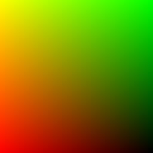
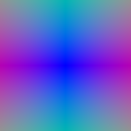
64 depths are spaced uniformly between near = 0 and far = 5, and each sample point is
origin + t · direction. The sample points from the first camera form the expected viewing frustum.
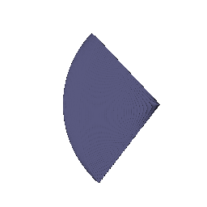
For each sample, αi = 1 − exp(−σiΔti) and Ti = ∏j<i(1 − αj) (computed with a cumulative product, with T1 = 1). The weights wi = Tiαi are used for both color (∑ wici) and depth (∑ witi). The rendered GIF matches the TA GIF to within GIF compression noise (mean absolute difference ≈ 1/255 per pixel).

Each training step renders only a random subset of rays. torch.randperm shuffles all pixel coordinates and the
first n_pixels are kept (4096 per step, no duplicates). The same coordinates are used to sample the ground-truth
colors.
The loss is the mean squared error between rendered and ground-truth colors. Training the box's center and side lengths for 1000 epochs (Adam, lr 5e-4) gives, rounded to 1/100:
| x | y | z | |
|---|---|---|---|
| Box center | 0.25 | 0.25 | 0.00 |
| Box side lengths | 2.01 | 1.50 | 1.50 |
Spiral rendering of the optimized box. It matches the TA's part_2.gif.
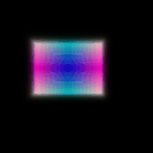
Architecture. Positions are encoded with 6 harmonic frequencies (3 → 39 dims) and passed through a 6-layer, 128-unit ReLU MLP with a skip connection that re-injects the encoding at layer 3. A linear head followed by ReLU gives density, and a 128→64→3 head followed by Sigmoid gives color. Trained for 250 epochs on 128×128 images, 1024 rays per step, 128 samples per ray, Adam lr 5e-4.
Note on initialization. With a ReLU density, the randomly initialized network output zero density at every sample, so no gradient reached the density head and the renders stayed black. Initializing the density layer's bias to 0.1 makes density start slightly positive, and training then converges normally.
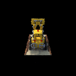
I implemented all three extensions (4.1 is the required one; 4.2 and 4.3 are extra credit).
The viewing direction is encoded with 2 harmonic frequencies (3 → 15 dims) and concatenated with the 128-d trunk
feature as input to the color head only. Density still depends only on position. Trained on the materials scene
(nerf_materials.yaml: 250 epochs, 128×128, lr 1e-4).
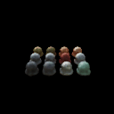
Trade-off between view dependence and generalization. View dependence lets the model represent specular highlights and reflections, which a position-only NeRF has to blur or bake into a fixed color. The risk is overfitting: with only ~100 training views, a powerful direction input lets the network explain each training image with view-specific colors instead of learning correct geometry, which produces artifacts or floaters from novel viewpoints. The design limits this in three ways: (1) direction feeds only the color head, so geometry is shared by all views; (2) direction uses far fewer frequencies than position (2 vs. 6), so view effects stay smooth; and (3) direction enters late, through a small head, so most of the capacity goes to view-independent structure.
Two NeRFs of the Q3 architecture are used. The coarse network is evaluated at 64 stratified samples. Its weights (excluding the endpoints) define a piecewise-constant PDF over the bins between sample midpoints, and 64 additional depths are drawn from it by inverse-transform sampling (random during training, evenly spaced at render time). The fine network is evaluated at the sorted union of all 128 depths. The loss is MSE(fine) + MSE(coarse), and the coarse weights are detached before sampling. For a fair comparison, the Q3 baseline uses 128 uniform samples, so the fine network sees the same number of points per ray.
| Model | Test PSNR (20 views) | Render time / 128×128 image | Training speed |
|---|---|---|---|
| Q3 NeRF, 128 uniform samples | 23.08 dB | 135 ms | 36.9 it/s (~14 min) |
| Coarse/fine, 64 + 64 samples | 23.30 dB | 202 ms (1.5×) | 19.7 it/s (~25 min, 1.9×) |
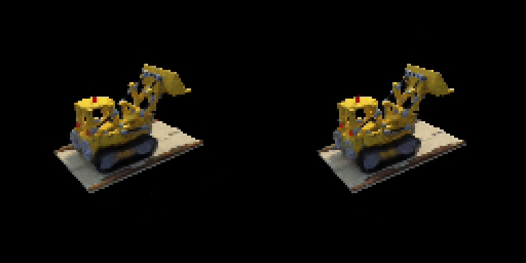
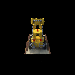
Trade-offs. Importance sampling places the fine network's samples where the coarse pass found surfaces instead of spending most of them on empty space, which gives a small but consistent quality gain (+0.22 dB, slightly crisper edges). The cost is running two networks: 64 coarse + 128 fine evaluations per ray instead of 128, so rendering is about 1.5× slower and training about 1.9× slower. At 128×128 resolution with a compact object, uniform sampling is already reasonably dense, so the gain is modest. It matters more at higher resolution or with a tighter sample budget.
Implementation. NeuralSurface encodes positions with 6 harmonic frequencies and passes them through a 6-layer,
128-unit MLP. Its first output is the signed distance (no activation, since distance can be negative), and the remaining 128
outputs are a feature vector that a 2-layer color MLP maps to RGB with a sigmoid. The eikonal loss is
mean((‖∇d‖ − 1)²) on random points in the scene bounds (weight 0.02). SDF to density follows VolSDF:
σ = α·Ψβ(−d), where Ψβ is the CDF of a zero-mean Laplace
distribution with scale β. I wrote it with exp(−|d|/β) in both branches so it cannot overflow and produce NaN gradients.
What α and β do. α is the density deep inside the object: the maximum opacity. β controls how sharply density falls off around the zero level set. Density goes from α to 0 over a band roughly a few β wide, so β acts as the "blurriness" or thickness of the surface.
Experiments and chosen settings. With the default settings (α = 10, β = 0.05) the color renders looked fine, but the extracted mesh had a large lumpy "floor" of spurious surface around the object. At initialization the network outputs SDF ≈ 0 everywhere, so the whole scene starts as surface, and because the background is black the network learns to paint that surface black instead of removing it. I added a sphere prior: the MLP predicts a residual on top of the SDF of a radius-1 sphere (d = MLP(x) + ‖x‖ − 1), so space far from the object starts out empty. This removed the spurious geometry. I then swept β with the prior:
| Setting | Test PSNR | Geometry |
|---|---|---|
| No prior, β = 0.05 | 21.17 dB | large spurious surface around the object |
| Sphere prior, β = 0.1 | 20.47 dB | clean but blobby, rounded base |
| Sphere prior, β = 0.05 | 20.90 dB | clean, slightly rounded base |
| Sphere prior, β = 0.02 | 21.36 dB | sharpest: flat rectangular base, crisp scoop |
The best setting is α = 10, β = 0.02 with the sphere prior (250 epochs, lr 5e-4, eikonal weight 0.02). The trend matches the analysis above: lower β gives a sharper, more accurate surface, and the sphere prior is what makes the low-β setting trainable by giving it a sensible starting surface. VolSDF's PSNR is a little below the density NeRF's (21.4 vs. 23.1 dB) because it is constrained to a single clean surface, in exchange for well-defined geometry.
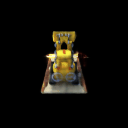
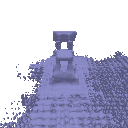
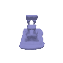
Each 3D Gaussian's covariance is Σ = R S ST RT (s²I in the isotropic case). It is projected to
a 2D covariance Σ' = J W Σ WT JT, and its mean is projected to pixel coordinates with
transform_points_screen. Gaussians are sorted by camera-space depth, and those behind the camera are discarded.
For every pixel, α = o·exp(−½(x−μ')TΣ'−1(x−μ')),
T is the cumulative product of (1 − α) over closer Gaussians, and color, depth and mask are ∑cαT,
∑zαT and ∑αT. All 4 unit tests pass, and the frame from the same camera as the reference image is
pixel-identical to it.
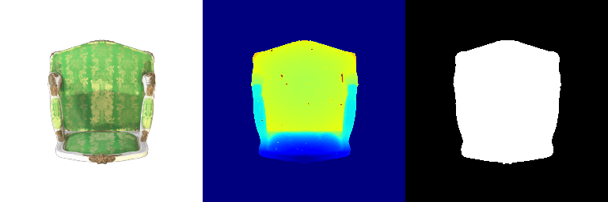
| Parameter | Learning rate (Adam, eps 1e-15) |
|---|---|
| opacities (pre-sigmoid) | 0.05 |
| scales (log) | 0.005 |
| colours | 0.02 |
| means | 0.0005 |
| Iterations | Loss | Mean PSNR (test) | Mean SSIM (test) |
|---|---|---|---|
| 1000 | L1 | 29.906 | 0.942 |
Means get the smallest learning rate because small moves shift a Gaussian across many pixels, while colors (initialized
randomly) and opacities can change faster. To train on an 8 GB laptop GPU, I added gradient checkpointing to the mini-batched
splatting in Scene.render: each mini-batch's intermediates are recomputed during the backward pass instead of
stored. This lowered peak memory from ~15 GB to ~3.5 GB (run with --gaussians_per_splat 2048).
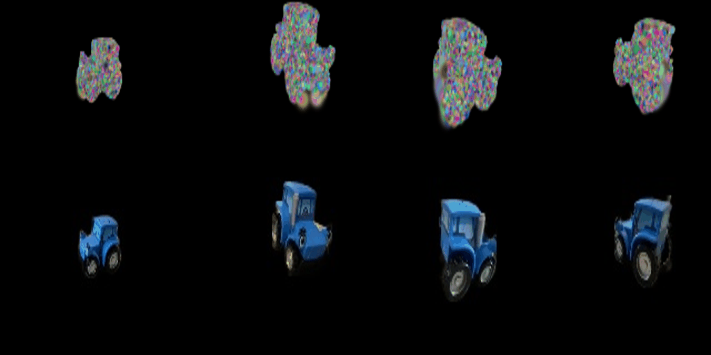
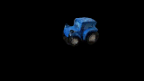
Each pre-trained Gaussian stores 16 SH coefficients per color channel (degrees 0–3, 48 numbers). For every Gaussian I
compute the unit direction from the camera center to its mean, evaluate the 16 real SH basis polynomials at that direction,
and take the coefficient-weighted sum plus 0.5, clamped at 0 (a vectorized version of the reference get_color).
As a check, keeping only the degree-0 coefficient reproduces the Q5 DC colors exactly.
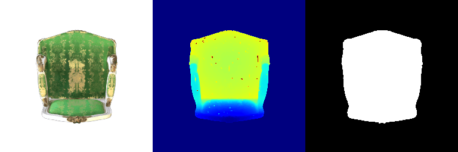
Side-by-side comparisons of the same frame (left: DC only, right: full SH):
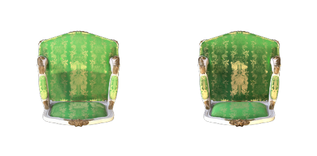
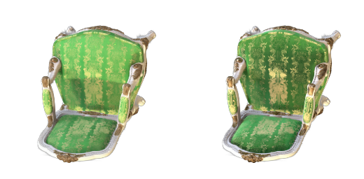
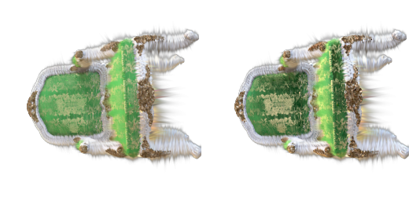
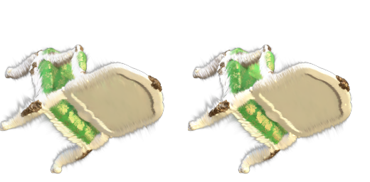
The materials scene is trained from random initialization (init_type="random": 10,000 Gaussians with means
drawn from a normal distribution of std 0.2 around the origin) at 128×128. Both runs use gradient-checkpointed
splatting on an 8 GB laptop GPU.
| Run | Gaussians | Learning rates | Loss | Iterations | Mean PSNR | Mean SSIM |
|---|---|---|---|---|---|---|
| Baseline (Q6 setup) | isotropic | opacities 0.05, scales 0.005, colours 0.02, means 0.0005 | L1 | 1000 | 18.115 | 0.674 |
| Improved | anisotropic | opacities 0.05, scales 0.005, colours 0.02, quats 0.001, means 0.002 → 0.00002 (exponential decay) | 0.8·L1 + 0.2·(1 − SSIM) | 3000 | 23.082 | 0.854 |
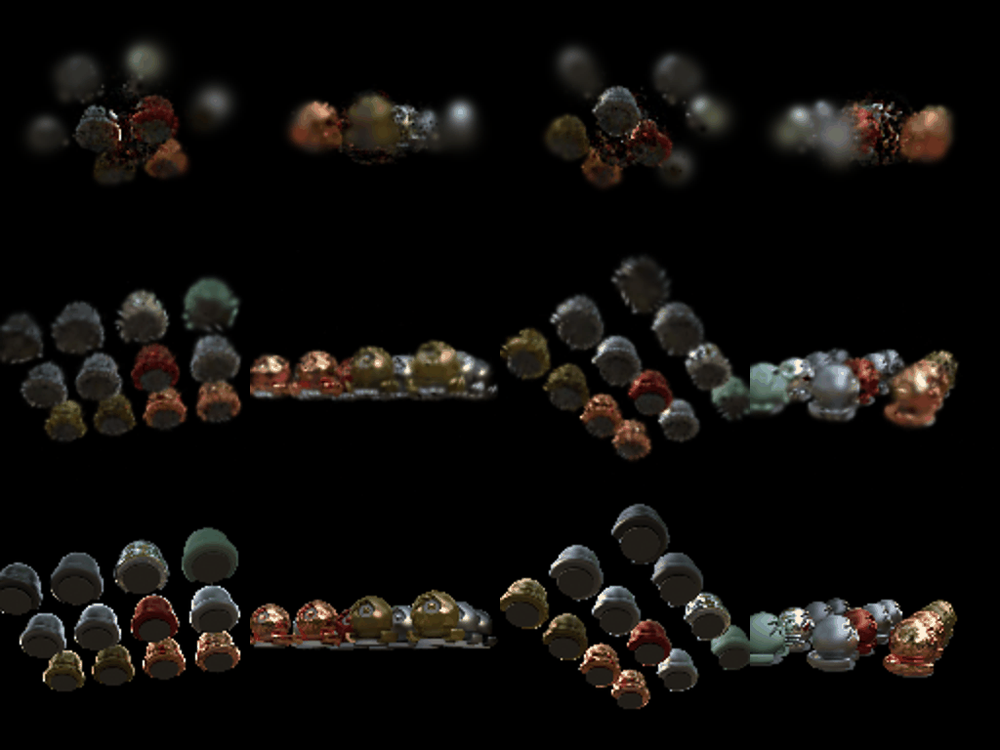
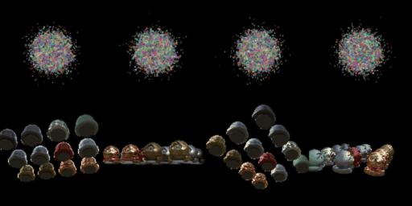
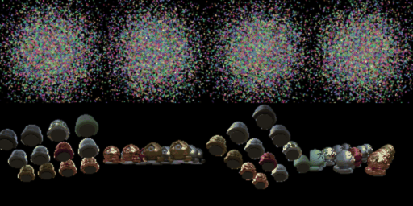
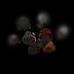
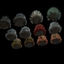
Comparison. The baseline never recovers the scene layout. Its Gaussians stay clumped near the origin, where they were initialized, and the objects further out appear only as faint, blurry blobs because no Gaussians reach them in 1000 iterations with a small means learning rate. The improved model places all twelve objects correctly with the right colors and visible material differences (metallic, glossy, matte). PSNR improves by about 5 dB and SSIM by 0.18. The remaining errors are mostly slightly fuzzy, spiky silhouettes and missing fine specular detail, since colors are view-independent here.
Modifications compared with the Q6 setup (all used together in the improved run; I did not have time for a per-change ablation):